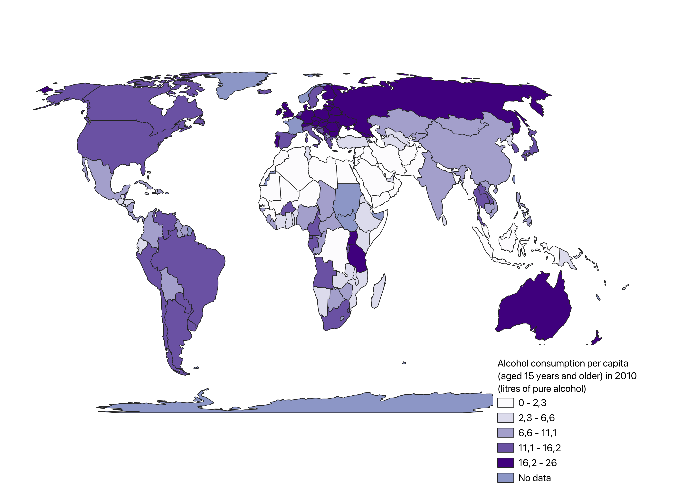

June 26, 2024
Welcome to my GIS portfolio. My name is Heidi and I am studying Human Geography and Sociology at University College Utrecht. During a course I took on GIS, I got the opportunity to learn to visualize and analyze geographic and societal data. This website serves as a portfolio to showcase a selection of maps I created during this course.
Geographical information systems (GIS) is a way of analyzing and interpreting spatial data and maps. I learned to use four different types of software, that enabled me to create a wide variety of maps. This software includes QGIS, ArcGIS Pro, Esri Online and Google Earth Engine.
made with QGIS and Esri Online

This choropleth map shows SDG indicator 3.5.2 “Alcohol per capita consumption (aged 15 years and older) in 2010 in liters of pure alcohol”.
This comparison choropleth map shows SDG indicator 3.2.1 “Child mortality rate (under five) in 2019” and 10.7.4 “Proportion of the population who are refugees (by country of origin in 2019)”.

This map captures the elevation of the area relative to the river. The chosen area represents the border between Noord Brabant and Zuid Holland.

This Kernel Density map of cherry trees in Utrecht provides a visual representation of the spatial distribution and density of cherry trees within the city.
made with Google Earth Engine
This NDVI (Normalized Difference Vegetation Index) map of British Columbia, Canada, provides a detailed and insightful representation of the vegetation health and density across the province.
This NDVI (Normalized Difference Vegetation Index) map of Utrecht, the Netherlands, provides a detailed and insightful representation of the vegetation health and density across the city.

This map represents a 3D scheme of an area located in Velsen-Noord, a village in the province of Noord Holland.